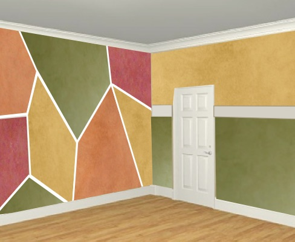
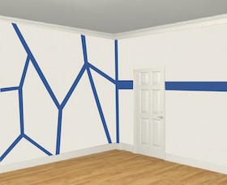
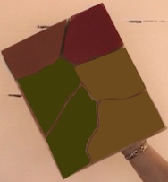
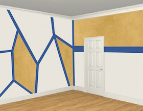
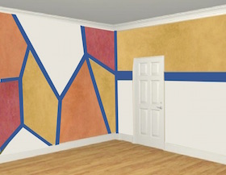
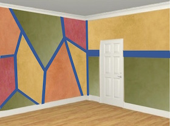
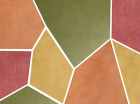

This faux painting idea uses the technique called Color Washing. It also incorporates a modern design. The base coat is a white color. The colors we used to mix our glaze are listed in the FREE e-book you receive with any purchae of our kits as well as the formula used to mix a sample size at Lowes or Sherwin Williams.

1) Basic Faux Painting Kit (included with any of our Combo kits). Buy yours today, visiting our Basic Faux Painting Kit.
2) Level.
3) Blue tape.
1) Paint your base coat with a SATIN sheen.
2) Tape off your wall with blue tape, dividing the sections with whatever measurement you desire, using the picture as a guide. IMPORTANT - Remember to adjust the tape in the corner when faux painting the gold, green and wine areas so they butt up against each other. Make sure your area is dry before removing or placing new tape on top.

3) Mix your glazes. We used Florentine Brass, Fox Fire, Burnt Wine and Shade Grown. You can get the formula for our colors on our FREE E-Book you get with any kit. Then load the Multi Color Faux Palette with 2 sections of Florentine Brass and Shade Grown and 1 section of each other color. NOTE - You can always load just the color you are using at a time.

4) Then, press the Poofy Pad onto the Florentine Brass section and with the Color Wash faux painting technique, paint the area as shown in the picture. Follow instructions on the Faux Painting Workshop DVD that is included in the Basic Faux Painting Kit.

5) Next, paint the color called Fox Fire. You can take a wet cloth and wipe off the Florentine Brass color off the Poofy Pad or use an extra one if you have it. Then paint the color Burnt Wine, after that.



6) And lastly, do the Shade Grown color. You will probably need to really wipe down the Poofy Pad if you are only using one, to make sure there is no residue of the the Burnt Wine color.
Our BASIC KIT INCLUDES Multi Color Faux Palette, 2 Poofy Pads, 2 Tuck and Gather tools and Workshop DVD. It's now on sale for only $41.99 for a limited time.